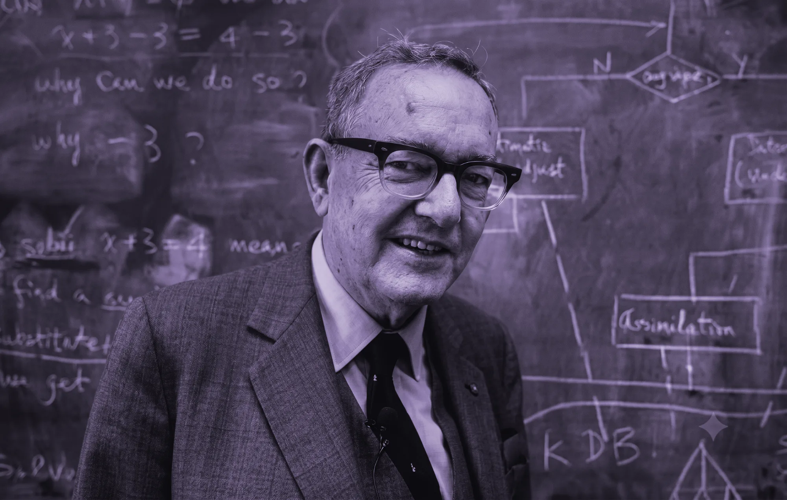
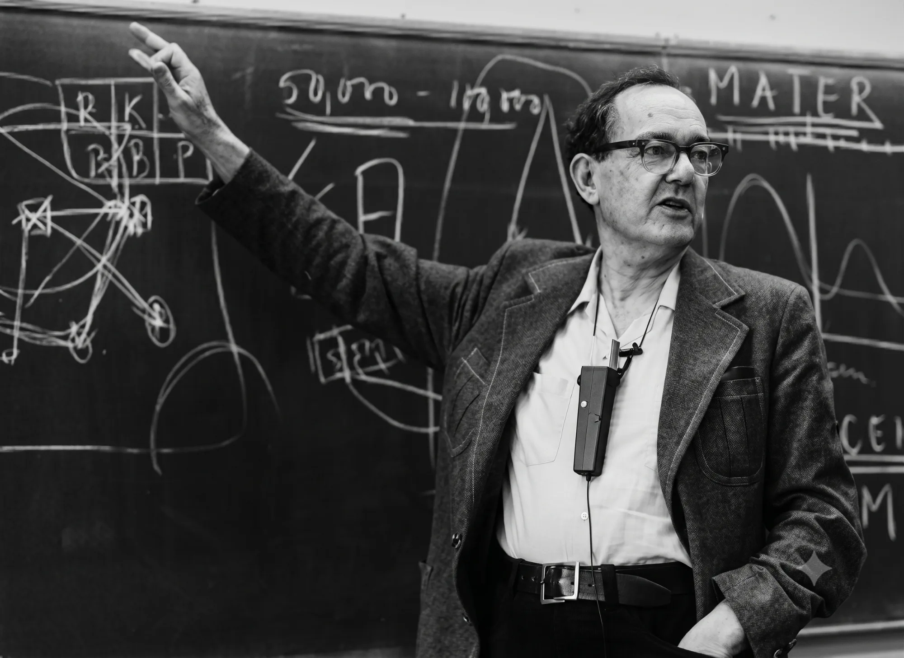
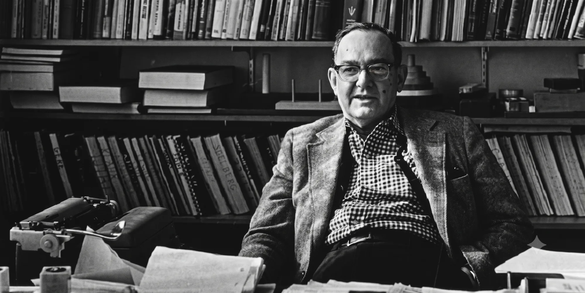

Fotografía real de Herbert A. Simon (Nobel de Economía 1978, padre de la racionalidad limitada). Se usa al hablar del origen científico del proyecto. Dos tratamientos: B&N ink para contexto editorial y duotono violeta (ink-950 → violet-100) cuando debe integrarse con la gráfica de marca.


